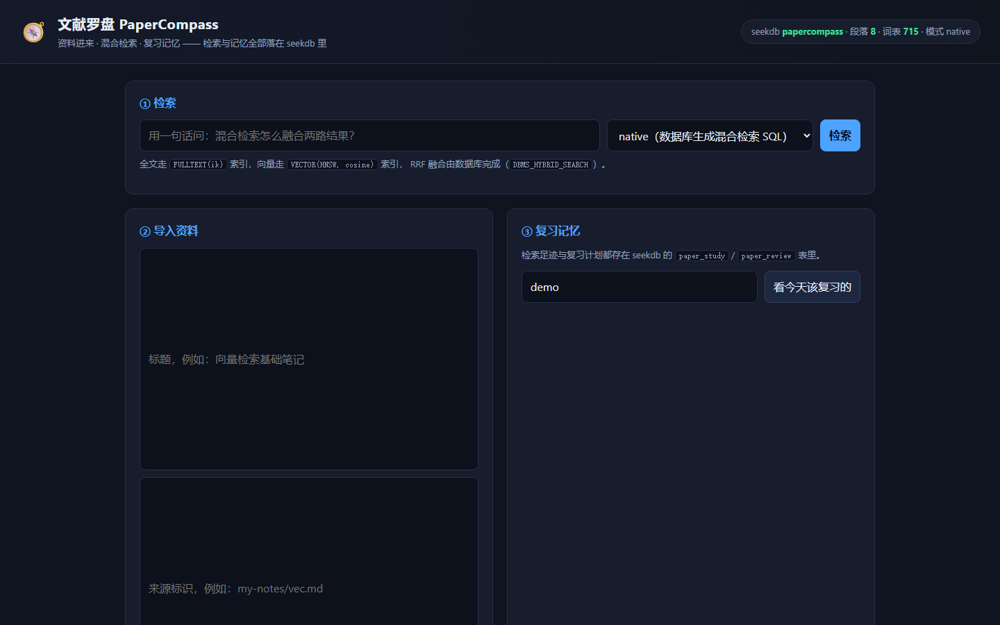
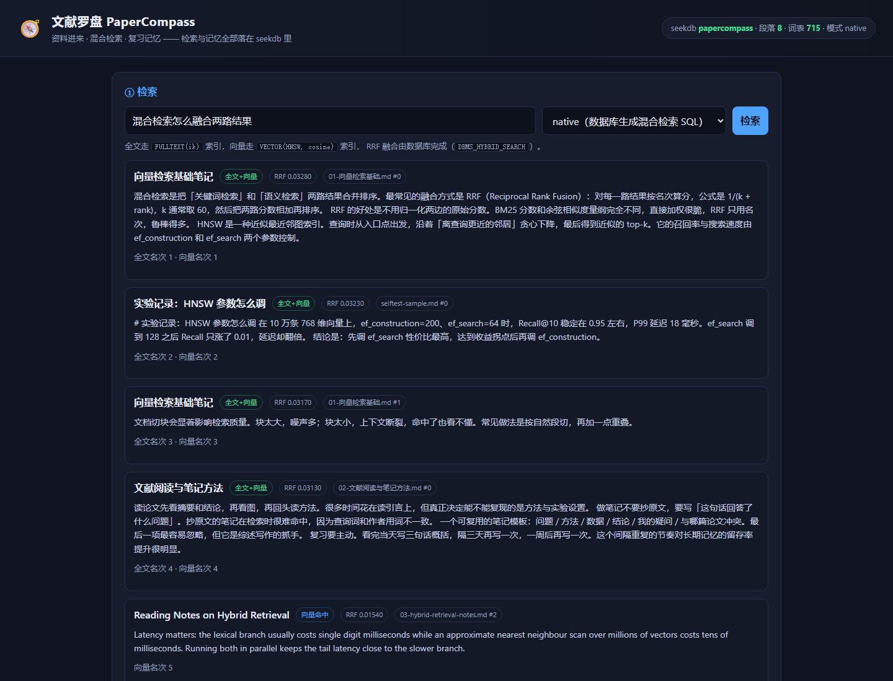

解决的痛点
找一段话要翻十几个文件
笔记散在十几个 Markdown 里，记不清关键词的时候，搜索框完全用不上，只记得「好像在哪篇里说过」。
抄原文的笔记检索不到
笔记越是抄原文，越难被自己的提问命中——提问用的是自己的措辞，笔记用的是作者的措辞。
看完就忘，没人提醒
读过的文献没有复习节奏，下次写东西时又想不起来，只能重新翻一遍。
三个核心功能
① 混合检索
段落级切块后同时写入全文索引与向量索引，查询走一条混合检索 SQL，全文与向量两路结果由数据库用 RRF 融合，客户端不拼合。片段里命中的词会标黄，用的就是后端那份分词规则。
② 检索足迹即记忆
每次检索的提问、命中段落与分数都落进 paper_study 表，检索历史就是可查询的数据，而不是浏览器缓存——搜索框下面的「最近检索」下拉读的就是它。
③ 复习计划
把资料排进复习计划，按 SM-2 简化算法打分，到期的条目会出现在「今天该复习的」里，间隔自动拉长。
架构 · 一次提问发生了什么
整条链路只有三个角色，相似度计算与结果融合都不在应用进程里做： 浏览器发一句话，Node 服务只负责组装一条 SQL，召回与融合交给 seekdb 的索引。
页面 public/
一句提问 → 一条 POST /api/search。
没有内存索引，也没有本地向量。
src/server.js + db.js
取词表算 IDF、把提问编成查询向量（本地特征哈希，无需 API Key），拼出一条检索 SQL。
召回 → 融合 → 返回，全在库内
MATCH(body) AGAINST(...)
→ 全文名次
emb VECTOR(384)
→ 向量名次
↓ 两路名次在库内合并，只回一条结果集 ↓
DBMS_HYBRID_SEARCH.GET_SQL()
RRF 融合
Top-K 段落 + 两路名次 + 实际执行的 SQL 一起回给浏览器
↩ 返回 {hits, sql, elapsedMs}：页面直接渲染名次与 SQL，客户端不做任何融合计算
写进去的路径也一样：一条资料落到四张表
粘贴 Markdown / 纯文本 → chunk.js 按自然段切块（带重叠）。
paper_doc：正文进 FULLTEXT 索引，emb 进 VECTOR 索引。
paper_doc_term / paper_term：df 由 SQL 聚合，下次查询用它算 IDF。
paper_study 存检索足迹，paper_review 按 SM-2 存下次到期时间。
这张图没有画外部依赖：没有向量数据库、没有 embedding 服务、没有搜索引擎中间件，
package.json 里只有 mysql2 一个运行时依赖。
效果演示
下面的结果是从真实 seekdb 实例跑出来的快照（导出时间见页脚）， 包含数据库生成的混合检索 SQL 与每条命中的全文名次、向量名次。 想跑实时检索，按 运行说明 起本地服务即可。
界面截图
截图来自本地 npm start 起的应用（默认 http://127.0.0.1:5174），
同一份文件放在仓库 qoder/evidence/screenshots/。
待重截：命中高亮、「最近检索」下拉与「排进复习计划」按钮是后面加的界面能力，
等可用的 seekdb 实例接上后重新截一组带真实命中的图（截图必须是真实运行产物，不用假数据凑）。


技术结合：seekdb 到底做了什么
| 能力 | 用在哪 | 怎么核对 |
|---|---|---|
| 全文索引（ik 分词） | 段落正文的 MATCH(body) AGAINST (...) 精确命中 | SHOW INDEX FROM paper_doc 可见 ft_paper_doc_body |
| 向量索引（HNSW / cosine） | 段落向量 emb VECTOR(384)，查询向量按 IDF 加权 | EXPLAIN 显示 VECTOR INDEX SCAN |
| 混合检索 | DBMS_HYBRID_SEARCH.GET_SQL() 生成单条 SQL，RRF 在库内融合 | 页面「本次执行的 SQL」折叠区 |
| 记忆表 | paper_study（检索足迹）、paper_review（复习计划）、paper_term（词表与 IDF） | 见上面「架构」一节的落库路径，或 SHOW TABLES |
运行说明（评审可直接复现）
# 1. 起一个 seekdb（MySQL 协议，默认 2881） docker run -d --name papercompass-seekdb -p 2881:2881 oceanbase/seekdb:latest # 2. 装依赖、建库建表、灌入示例语料 cd qoder npm install npm run setup-db # 3. 起服务（默认 5174） npm start # 打开 http://127.0.0.1:5174 # 4. 端到端自测（同时产出 evidence/selftest.md） npm run selftest # 5. 单元测试（Node 内置 node:test，不需要数据库） npm test
环境变量：SEEKDB_HOST / SEEKDB_PORT / SEEKDB_USER /
SEEKDB_PASSWORD / SEEKDB_DATABASE / PORT /
EMBED_DIM / SEARCH_MODE（native 或 sql）。
默认 EMBED_PROVIDER=local：向量是完全本地的特征哈希 TF-IDF，
不需要模型下载、不需要 API Key，评审环境不会有额外前置依赖。
想换成真 embedding 时设 EMBED_PROVIDER=openai，再给
EMBED_API_KEY / EMBED_BASE_URL / EMBED_MODEL，
并把 EMBED_DIM 与 paper_doc.emb 的维度对齐（不一致会在启动时报错）。
验证样例
| 初始状态 | 操作 | 预期 |
|---|---|---|
| 已导入 3 篇示例笔记 | 检索「混合检索怎么融合两路结果」 | 命中《向量检索基础笔记》首段，命中方式为「全文+向量」 |
| 同上 | 检索「HNSW 的 ef_search 调到多少合适」 | 命中《实验记录：HNSW 参数怎么调》，中英混排照样命中 |
| 同上 | 点「看今天该复习的」→ 给「很熟」 | 该条目下次复习时间推到未来，间隔按 SM-2 拉长 |
| 同上 | 再次检索同一问题 | paper_study 多一条检索足迹 |
完整实测记录见仓库 qoder/evidence/selftest.md。
使用效果
这一节现在是占位：站点还没发布，没有真实访问数据，编造数字没有意义。
下面的「怎么采集」写完就会照着做，发布后把真实数值填进表格，并在
qoder/evidence/usage/ 里留下对应的原始材料（统计截图、日志导出、问卷原文件）。
| 指标 | 数值 | 怎么采集 | 原始材料放哪 |
|---|---|---|---|
| 访问次数 | 待填 | 站点发布后，在 Qoder 的 Sites 里打开这个站点的「访问统计」，读「访问次数」（同一访客多次打开会累加）。 | evidence/usage/analytics-<日期>.png |
| 独立访客 | 待填 | 同一张「访问统计」页读「独立访客」；发布第 3 天、第 7 天各记一次，避免只记一个峰值。 | 同上（两张截图分别标日期） |
| 真实提问数 / 人均提问 | 待填 | 应用自己的日志就是数据源：SELECT COUNT(*) AS 检索次数, COUNT(DISTINCT user_id) AS 人数, COUNT(DISTINCT query_text) AS 不同提问 FROM paper_study; 另外记一条 hit_by='both' 的占比，用来说明混合检索确实两路都命中。 |
evidence/usage/paper_study.csv（查询结果导出） |
| 复习坚持度 | 待填 | SELECT reps, COUNT(*) FROM paper_review GROUP BY reps; 看有多少条目真的复习过第二次以上，比「有多少人打开过」更能说明记忆链路有用。 |
evidence/usage/paper_review.csv |
| 主观评价 | 待填 | 找 5–10 位同学各用一次，问三个问题：能不能找到自己写过的那段话、比手动翻文件快多少、会不会持续用。问卷工具（金数据 / 腾讯问卷都行）导出汇总表。 | evidence/usage/survey.csv |
填表时请保持可核对：数值旁边注明统计截止时间与样本量（例如「独立访客 23 · 截至 11-20」）， 所有截图与导出文件都提交到仓库，别只留一个好看的数字。
Qoder 开发记录
本项目从需求拆解、编码、调试到发布全程在 Qoder 里完成。
关键对话截图 / 录屏统一放在仓库
qoder/evidence/qoder-dev/，本节先占位，图片补齐后同步贴到这里。
需求拆解
截图待补 · evidence/qoder-dev/01-需求拆解.png
让 Qoder 把「文献检索 + 复习记忆」拆成切块 / 双索引 / 混合检索 / 记忆表四块，并定下「融合必须在库内」这条硬约束。
编码
截图待补 · evidence/qoder-dev/02~03-编码-*.png
向量改成可插拔 provider（EMBED_PROVIDER=local|openai），并给切块、分词、SM-2 排期补上 33 条单元测试。
调试
截图待补 · evidence/qoder-dev/04~05-调试-*.png
排查中文提问不命中（分词与停用词口径）、核对 SHOW INDEX 与 EXPLAIN 里的索引扫描是否真的走库。
发布
截图待补 · evidence/qoder-dev/06-发布-Qoder-Sites.png
用 Qoder Sites 发布本页面，可见范围设为「任何人都可访问」，再用无痕窗口验证未登录可打开。
- 任务清单与验收标准：
qoder/QODER-DEV.md - Qoder 账号 UID：待填（写入
qoder/evidence/qoder-dev/QODER-UID.txt，提测表单没有 UID 输入框） - 代码仓库：zn-08/PowerContext · 2026-competition-ecosystem/qoder
- 端到端验证记录：
qoder/evidence/selftest.md（含单元测试输出附录） - 项目网站：本页面（Qoder Sites 发布，可见范围「任何人都可访问」）